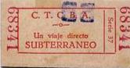

No sé si tengo buenos motivos para escribirte esto.
Hay algo que tengo muchas ganas de confesarte todo el tiempo.
Estamos participando en un intercambio siniestro, estamos haciendo el mundo más nuestro.
Quiero ponerlo en palabras, pero también quiero ponerlo en imágenes.
Me asusta que me mires como si no supieras nada de mí, como si no vieras lo que para mí es tan obvio...
Tengo la pulsión de guardar este momento y poder mirarlo para siempre.
Por ahora, será mejor que me veas como quieras verme.
Me dejo creer que puedo ser así.
Quiero saber si vas a seguir buscando.
Faltan seis cintas.
-C
ARCHIVO RECUPERADO 01/07
UBICACIÓN DEL HALLAZGO: Bolsillo derecho de un tapado, habitación principal
SERIE 68341
ESTADO: Digitalizado
